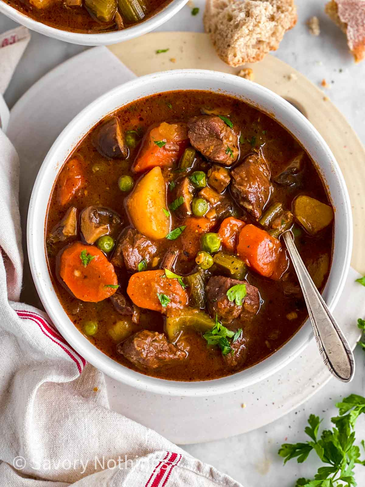

Beef Stew

Ingredients
Beef stew meat
Onions
Potatos
Carrots
Steps
Step One: Cut Ingredients
Step Two: Boil the Water and Add Ingredients
Step Three: Add Spieces
Step Four: Let it Cook on Low Heat for Two Hours